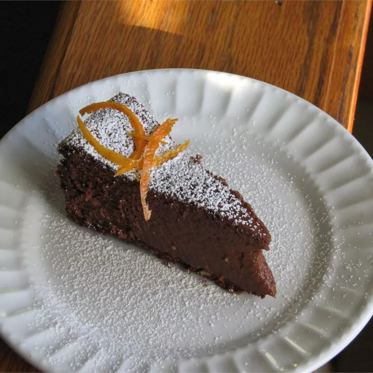

Fudge Truffle Cheesecake

Description
Truffle-like chocolate cheesecake in a chocolate cookie crust. If this does not drive your mate wild, keep the recipe and replace him or her. Note: The topping for this cake is your choice, you could use chocolate dipped strawberries, purchased chocolate truffles, or melt chocolate and/or white chocolate and drizzle it over the top.
Ingredients
- 1 ½ cups vanilla wafer crumb
- ½ cup confectioners' sugar
- ⅓ cup unsweetened cocoa powder
- ⅓ cup butter, softened
- 2 cups semi-sweet chocolate chips
- 3 (8 ounce) packages cream cheese, room temperature
- 1 (14 ounce) can sweetened condensed milk
- 4 eggs
- 2 teaspoons vanilla extract
Steps
- Preheat oven to 300 degrees F (150 degrees C).
- In a large mixing bowl, mix together crushed vanilla wafers, confectioners' sugar, cocoa, and butter by hand. Press ingredients into a 9-inch springform pan.
- In the top of a double boiler, melt the chocolate chips, making sure that they are very smooth.
- In a large bowl, beat cream cheese until fluffy with an electric mixer. Gradually beat in condensed milk until smooth. Mix in melted chocolate, eggs, and vanilla. Beat with electric mixer on low speed until the ingredients are thoroughly blended. Pour the filling into the prepared crust.
- Bake at 300 degrees F (150 degrees C) for 55 minutes. The cake will seem underbaked in the center, but will continue to cook after you remove it from the oven.
- Allow to cool to room temperature, then refrigerate for several hours before serving.